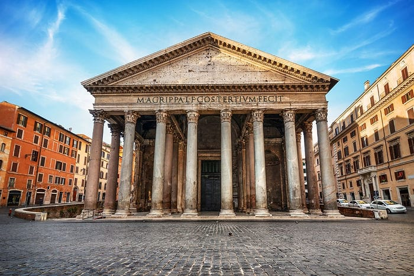
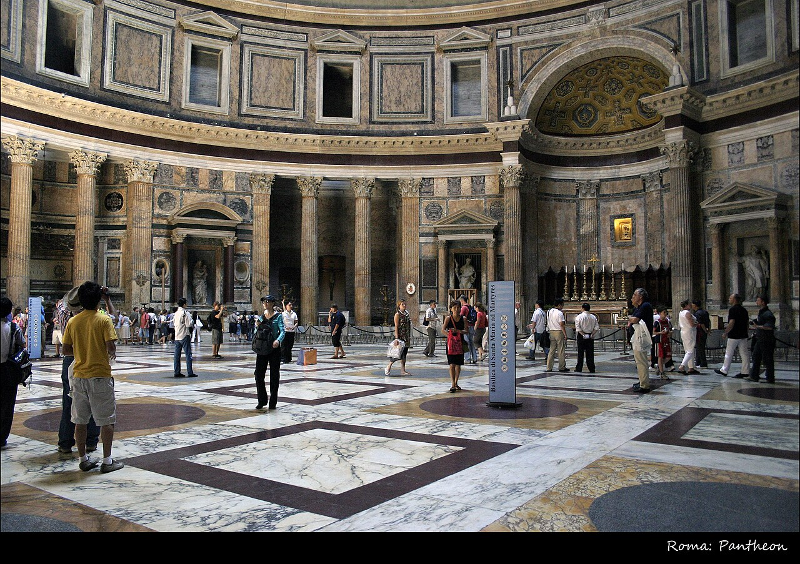
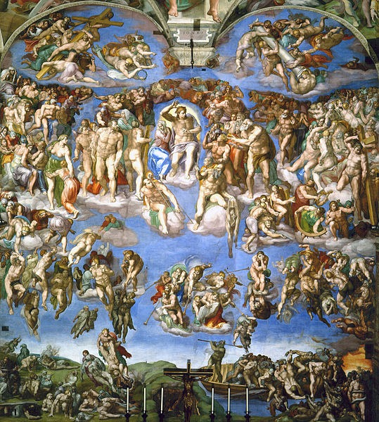
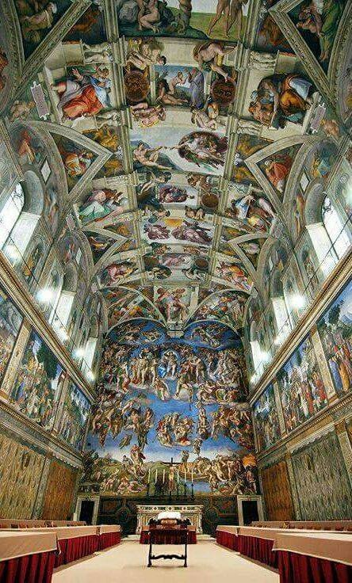

Pantheonul din Roma

Pantheonul din Roma (imagine din interior)

Judecata de apoi

Capela Sixtina (interior)
Pantheonul din Roma
1. Istoria Pantheonului
- Construcție: A fost construit inițial de Marcus Agrippa în anul 27 î.Hr., dar clădirea
actuală datează
din timpul împăratului Hadrian (aproximativ 118-125 d.Hr.), deoarece structura originală a fost distrusă
de incendii.
- Destinație: Inițial, era un templu dedicat tuturor zeilor romani („Pantheon” înseamnă „toți
zeii” în
greacă).
2. Arhitectura Pantheonului
- Domul impresionant: Are un diametru de 43,3 metri și a fost cea mai mare cupolă din
lume timp de
secole. Este realizată din beton roman și se subțiază spre vârf pentru a reduce greutatea.
- Oculus: La centrul cupolei se află un orificiu circular („oculus”) cu un diametru de 8,2
metri, care
permite luminii să pătrundă în interior.
- Fațada: Prezintă un portic cu opt coloane corintice, tipic templelor romane.
3. Transformări și utilizări ulterioare
- În 609 d.Hr., Pantheonul a fost transformat în biserică creștină, fiind dedicat Sfintei Maria
și
Martirilor. Acest lucru l-a salvat de distrugere în Evul Mediu.
- În perioada Renașterii, a devenit loc de înmormântare pentru artiști celebri, precum Raffaello.
4. Importanța Pantheonului
- Este unul dintre cele mai bine conservate monumente romane.
- A influențat arhitectura europeană, fiind un model pentru numeroase clădiri, inclusiv Capitoliul din
SUA.
- Reprezintă măiestria ingineriei romane, datorită tehnicii inovatoare folosite la
construcția cupolei.
Capela Sixtină
- Capela Sixtină este una dintre cele mai renumite capodopere ale artei renascentiste și un simbol al
Vaticanului. Situată în Palatul Apostolic din Vatican, capela este faimoasă pentru frescele
sale
spectaculoase, în special pentru tavanul pictat de Michelangelo între anii 1508 și 1512, precum
și
pentru „Judecata de Apoi”, realizată de același artist între 1536 și 1541.
- Capela a fost construită între 1473 și 1481, în timpul pontificatului Papei Sixtus al
IV-lea, de la care
își ia numele. Arhitectura sa este relativ simplă, având o formă dreptunghiulară și fiind inspirată de
Templul lui Solomon din Biblie. Inițial, pereții capelei au fost decorați cu fresce realizate de
artiști
renumiți ai epocii, precum Sandro Botticelli, Domenico Ghirlandaio și Pietro Perugino.
- Tavanul pictat de Michelangelo este una dintre cele mai impresionante opere de artă ale tuturor
timpurilor. Această capodoperă cuprinde scene biblice din Cartea Genezei, inclusiv „Crearea
lui Adam”,
una dintre cele mai iconice imagini din istoria artei. Lucrarea reflectă măiestria artistică a lui
Michelangelo și influența profundă a umanismului renascentist.
- La aproape 25 de ani după finalizarea tavanului, Michelangelo a revenit pentru a picta
„Judecata de
Apoi” pe peretele altarului. Această frescă ilustrează scena apocaliptică a judecății divine, cu
personaje dramatice și expresive, demonstrând stilul matur al artistului.
- Capela Sixtină are un rol important în viața Bisericii Catolice, fiind locul în care se desfășoară
conclavurile pentru alegerea unui nou papă. Astăzi, atrage milioane de vizitatori anual,
impresionați de
frumusețea și complexitatea frescelor sale. Capela Sixtină rămâne o mărturie a geniului artistic al
Renașterii și a influenței sale asupra culturii mondiale.